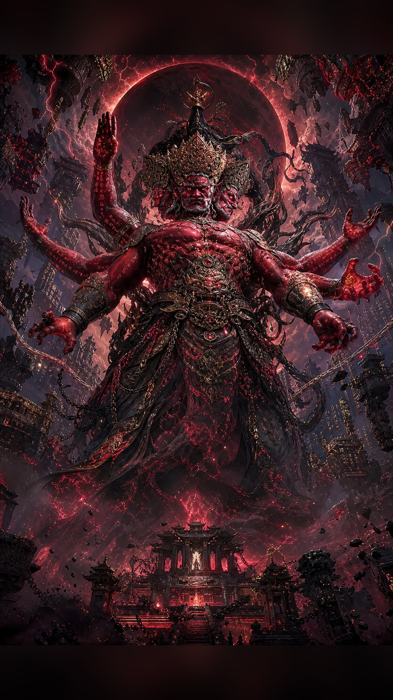
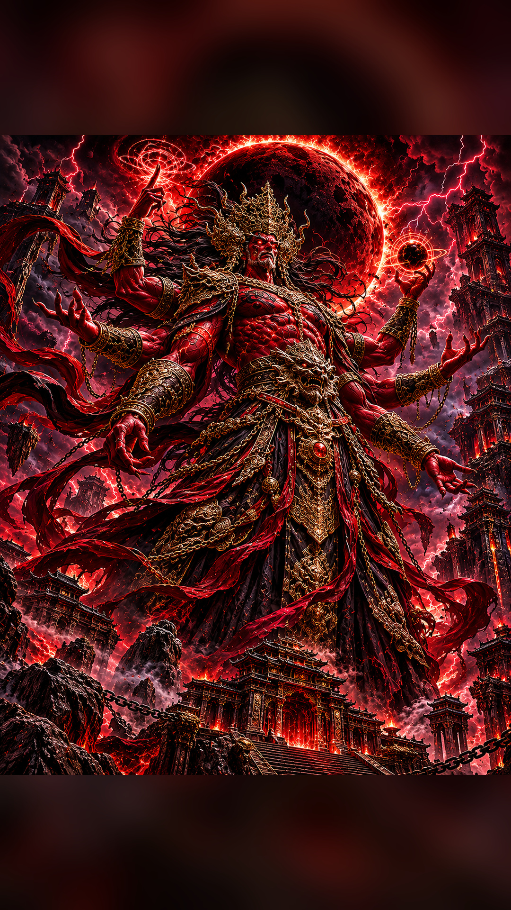
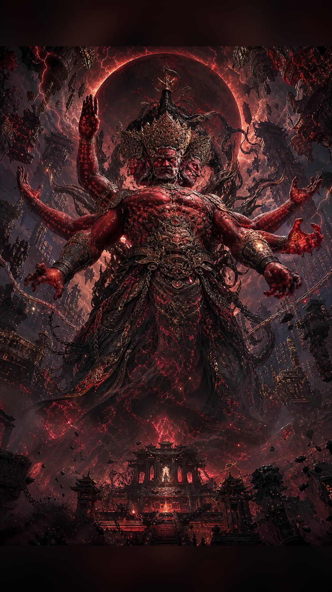

I · The Abyssal Sovereign
Enter the emperor's domain.
An ancient sovereign imagined through four visions of infernal power, celestial ruin and imperial darkness. Select an artwork to view it on its own page.

Enter the emperor's domain.

A vision of commanding power.

The demon king beneath the blood moon.

The final vision of the abyssal throne.